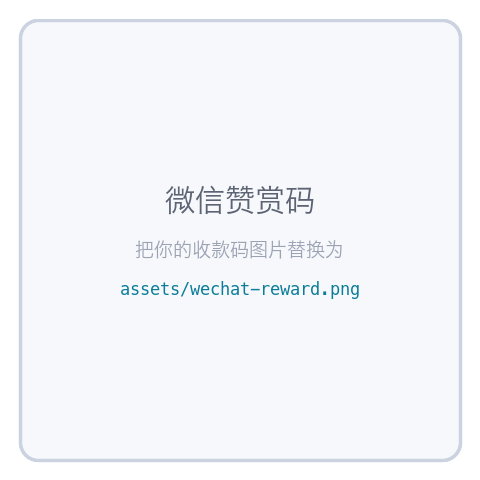

只学难词 Hard words only
市面上的背单词软件都在教你 apple 和 important。 如果你已经过了那个阶段，剩下的词才是真正难的 —— 而它们大多有故事。
Most vocabulary apps are still teaching you apple. If you are past that, what remains is the hard half of English — and most of it has a story behind it.
三条原则 Three rules
- 不收简单词。构建时用词频与考试标签自动卡门槛：六级以下、本身又不生僻的词一律进不来。 少数看起来简单的词能留下，是因为它有专业义 —— late 在因果推断里是「局部平均处理效应」，birthday 在密码学里是「生日攻击」， umbrella 在临床试验里是「伞式试验」，smile 在期权里是「波动率微笑」。
- 尽量讲清每个词从哪来。daemon 不是恶魔，是 MIT 取自麦克斯韦妖的守护精灵； cipher 来自阿拉伯语的「零」；negotiate 字面是「没有闲暇」； candid 来自罗马候选人所穿的白袍；meritocracy 是 1958 年造出来讽刺反乌托邦的。
- 不编造。词源逐条手写、可查证。写不出可靠词源的词就留白 —— 页面上没有词源的条目，是还没写，而不是编了一个。
怎么用 How it works
- 听 — 进入每个词自动发音，顶栏可切美音 / 英音，Ctrl+Enter 重听。
- 打 — 直接在页面上打字，打对的字母变绿、打错变红，全对时"叮"一声自动进入下一题。
- 记 — 单词下方是中文词意与英文释义，再往下是它的来历与例句，全部中英对照。
- 练 — 打错或跳过的词进「错题回顾」，可以只练错题；一次打对就自动移出。 带词源故事的词会自动排在前面，不用你去设置。
收录了哪些词 What's inside
4397个难词 hard words
18个领域 fields
512已配词源故事 with a story
3906释义为手写 hand-written glosses
- 技术与工程 Tech & Engineering
- 技术英语 Tech English · 400 词人工智能与机器学习 · 算法与数据结构 · 软件工程 · 系统与分布式 · 网络工程
ablation, abstraction, algorithm, amortized, annealing, anomaly - 数据与统计 Data & Statistics · 295 词概率与分布 · 推断与检验 · 因果与实验 · 数据工程
ablation, anomaly, asymptotic, attrition, bootstrap, calibration - 安全与密码学 Security & Cryptography · 225 词密码原语 · 攻击手法 · 防御与运营 · 身份与访问
anomaly, authentication, canary, cipher, collision, credential - 产品与设计 Product & Design · 225 词交互与可用性 · 增长与指标 · 设计语言 · 用户研究
baseline, bias, churn, cohort, idempotent, incentive - 学术与研究 Academic & Research
- 学术与论文 Academic & Research · 194 词学术动词 · 论证与评价 · 方法与结构
ablation, anecdotal, articulate, attrition, baseline, canonical - 思辨与逻辑 Reasoning & Argument · 126 词逻辑与论证 · 修辞与谬误
axiom, calibration, caricature, contingent, corollary, deduction - 医学与生命科学 Medicine & Life Sciences · 271 词解剖与生理 · 疾病与症状 · 药物与治疗 · 临床研究
cohort, gradient, induction, longitudinal, margin, protocol - 哲学与社会科学 Philosophy & Social Science · 255 词认识论与形而上 · 伦理与政治 · 社会学 · 经济学思想
cohesion, contingent, heuristic, incentive, warrant, particular - 商业与社会 Business & Society
- 职场与商务 Workplace & Business · 180 词沟通与协作 · 商业与产品 · 求职与职涯
accolade, advocate, align, ambiguous, arbitrage, articulate - 金融与量化 Finance & Quant · 249 词市场与工具 · 风险与收益 · 财报与估值 · 交易与结算
arbitrage, attrition, churn, cohort, fragmentation, latency - 法律与合规 Law & Compliance · 250 词合同条款 · 侵权与救济 · 知识产权 · 数据合规
liability, precedent, offer, subject, condition, material - 新闻时事与国际关系 News & Geopolitics · 245 词外交与冲突 · 政体与选举 · 贸易与制裁 · 媒体用语
attrition, bottleneck, incumbent, leverage, mandate, proxy - 通用与生活 General & Everyday
- 高阶通用词 Advanced General · 209 词性质与描述 · 行为与态度 · 抽象概念
acquiesce, admonish, ambivalent, arcane, austere, banal - 饮食与日常 Food & Everyday · 254 词烹饪技法 · 食材与风味 · 居家与事务 · 出行与就医
compensation, referral, produce, claim, reduce, statement - 语言训练 Language Drills
- 考试高频 GRE / TOEFL / IELTS · 1100 词GRE 高频 · TOEFL 高频 · IELTS 高频 · 学术词表 AWL
articulate, artifact, bias, compensation, complexity, concede - 词根词缀 Roots & Affixes · 273 词拉丁动词根 · 拉丁名词根 · 希腊词根 · 前缀 · 后缀
ambiguous, ambivalent, capitulate, contravene, corroborate, cursory - 易混词与搭配 Confusables & Collocations · 250 词形近易混 · 义近易混 · 动名搭配 · 介词搭配
contingent, deprecate, preclude, warrant, between, provide - 学术口语与会议表达 Academic Speaking · 94 词委婉与让步 · 提问与追问 · 主持与推进 · 汇报与答辩
presumably, nonetheless, seemingly, clarify, albeit, elaborate
常见问题 FAQ
- 为什么不收简单词？
- 因为已经过了那个阶段的人，再刷一遍 apple 没有意义。构建脚本会用词频与考试标签自动卡掉六级以下且不生僻的词，这是写进代码里的规则，不是一句口号。
- 词源故事从哪来的，可靠吗？
- 逐条手写，来自可查的词源学材料，不是模型编的。音标、词性与词频来自开源词典 ECDICT（MIT 协议），但它不含词源 —— 所以没有词源的词就是还没写到，而不是编了一个。
- 为什么要打字，而不是看一遍就过？
- 看一遍认得，不等于写得出来。逐字母打一遍会逼你面对每一个拼写细节，错了立刻变红。听、拼、义、源四件事同屏完成，比只看词表记得牢。
- 支持英音还是美音？
- 都支持。顶栏一键切换美音（默认）与英音，音标同步切换成对应的 UK / US 国际音标，语速可调。
- 打错的单词会记录下来吗？
- 会。打错或跳过的词自动进入错题回顾，可以只练错题；某个词一次打对就自动移出，记录保存在你自己的浏览器里。
- 听不到发音怎么办？
- 先点一下页面 —— 部分浏览器要求先有用户手势才允许发声。桌面版 Chrome / Edge / Safari 都可用。
- 要注册吗？收费吗？
- 都不用。没有账号、没有广告、不收集任何数据，源码开源。
请我喝杯咖啡 Support
Lexis 免费、无广告、不收集任何数据。如果它帮你记住了几个词，欢迎微信赞赏一下 —— 完全自愿。
Lexis is free with no ads and no tracking. If it helped, a tip on WeChat is welcome — entirely optional.

开源免费 · 无需注册 · 无广告 · 源码在 GitHub · 开始练习 →